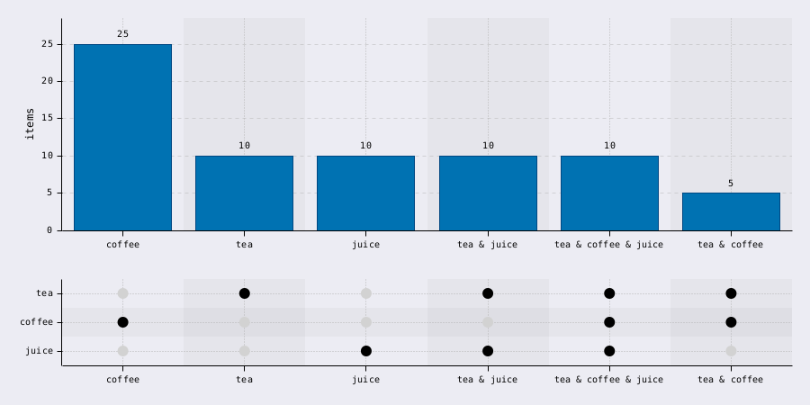
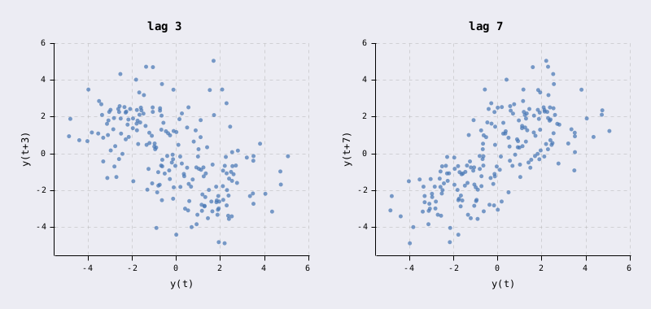
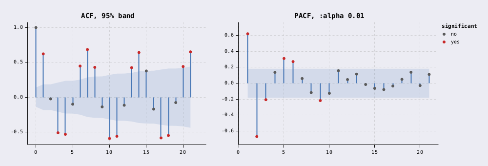
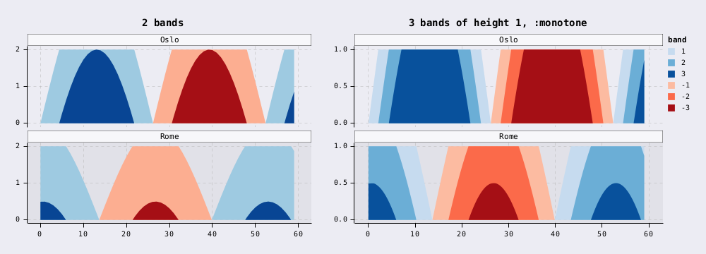
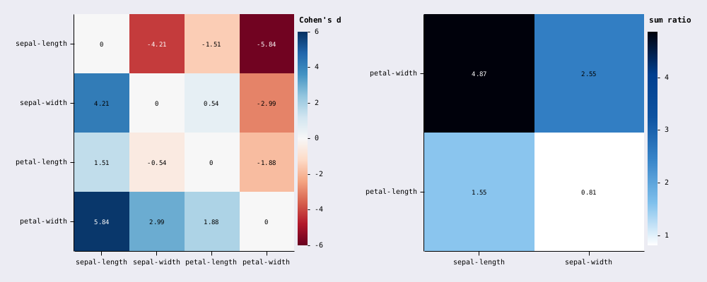

29 Sets and series
These functions turn set memberships, time series and variable pairs into rows: the bars and dot matrix of an UpSet plot, lag pairs, autocorrelations, the folded bands of a horizon chart and the matrix of a pairwise statistic. Use them to draw these plots with ordinary charts. The series builders plot/acf and plot/horizon draw autocorrelations and horizons directly; chart/pairwise draws one statistic per panel.
(ns reference.data-sets-series
(:require [fastmath.core :as m]
[fastmath.random :as r]
[cljplot2.chart :as chart]
[cljplot2.core :as plot]
[cljplot2.data.pairwise :as pairwise]
[cljplot2.data.series :as series]
[cljplot2.data.sets :as sets]
[cljplot2.describe :as describe]
[notebook-utils :as nu]))The table below holds made-up set memberships, a row per item and set it belongs to (an item may be in several); the UpSet sections use it:
(def members (concat (for [i (range 40)] {:set "coffee" :item i})
(for [i (range 25 60)] {:set "tea" :item i})
(for [i (range 30 45)] {:set "juice" :item i})
(for [i (range 55 70)] {:set "juice" :item i})))| set | item |
|---|---|
| coffee | 0 |
| coffee | 1 |
| coffee | 2 |
| coffee | 3 |
| coffee | 4 |
| coffee | 5 |
| coffee | 6 |
| coffee | 7 |
| coffee | 8 |
| coffee | 9 |
| coffee | 10 |
| coffee | 11 |
| coffee | 12 |
| coffee | 13 |
| coffee | 14 |
| coffee | 15 |
| coffee | 16 |
| coffee | 17 |
| coffee | 18 |
| coffee | 19 |
| coffee | 20 |
| coffee | 21 |
| coffee | 22 |
| coffee | 23 |
| coffee | 24 |
| coffee | 25 |
| coffee | 26 |
| coffee | 27 |
| coffee | 28 |
| coffee | 29 |
| coffee | 30 |
| coffee | 31 |
| coffee | 32 |
| coffee | 33 |
| coffee | 34 |
| coffee | 35 |
| coffee | 36 |
| coffee | 37 |
| coffee | 38 |
| coffee | 39 |
| tea | 25 |
| tea | 26 |
| tea | 27 |
| tea | 28 |
| tea | 29 |
| tea | 30 |
| tea | 31 |
| tea | 32 |
| tea | 33 |
| tea | 34 |
| tea | 35 |
| tea | 36 |
| tea | 37 |
| tea | 38 |
| tea | 39 |
| tea | 40 |
| tea | 41 |
| tea | 42 |
| tea | 43 |
| tea | 44 |
| tea | 45 |
| tea | 46 |
| tea | 47 |
| tea | 48 |
| tea | 49 |
| tea | 50 |
| tea | 51 |
| tea | 52 |
| tea | 53 |
| tea | 54 |
| tea | 55 |
| tea | 56 |
| tea | 57 |
| tea | 58 |
| tea | 59 |
| juice | 30 |
| juice | 31 |
| juice | 32 |
| juice | 33 |
| juice | 34 |
| juice | 35 |
| juice | 36 |
| juice | 37 |
| juice | 38 |
| juice | 39 |
| juice | 40 |
| juice | 41 |
| juice | 42 |
| juice | 43 |
| juice | 44 |
| juice | 55 |
| juice | 56 |
| juice | 57 |
| juice | 58 |
| juice | 59 |
| juice | 60 |
| juice | 61 |
| juice | 62 |
| juice | 63 |
| juice | 64 |
| … | … |
The values below form an autoregressive series: fastmath r/ar draws 200 values with coefficient 0.6 over a weekly sine plus seeded white noise. The lag and autocorrelation sections use them:
(def weekly (vec (take 200 (r/ar 0.6 (map (fn [t e] (+ (* 2.0 (m/sin (* m/TWO_PI (/ (double t) 7.0)))) (double e)))
(range) (r/white-noise (r/rng :mersenne 8) 1.0))))))| value |
|---|
| 1.4695303373637327 |
| 3.7937692943647656 |
| 2.4013952834270835 |
| -1.261504316599897 |
| -4.03772534292625 |
| -2.309647723994776 |
| -0.0942748434952343 |
| 2.352348185115162 |
| 1.483553983061273 |
| -0.44745742427932933 |
| -0.15922210131239506 |
| -2.3941380185956604 |
| 0.09868919741240556 |
| 3.024195320500766 |
| 4.805666195745328 |
| 4.5272384195306055 |
| 1.1865693687053867 |
| -0.7701774085208245 |
| -2.6060679864758804 |
| -1.929009126160534 |
| 0.434230490757167 |
| 2.433417614970744 |
| 1.2470710572055763 |
| -0.35936629788175345 |
| -1.3695978080065405 |
| -2.096800426513368 |
| -1.0778261669502014 |
| 0.6053934958999472 |
| 2.5911894419648216 |
| 2.682180349490924 |
| 0.17349745220848933 |
| -0.5693070693372042 |
| -1.7620184480470467 |
| -0.782715055453843 |
| 1.502901529541258 |
| 2.546266188414661 |
| 2.1329135956098964 |
| 1.9428523318336546 |
| -0.08196961280058535 |
| -2.241391331571816 |
| -2.6503317649800606 |
| -1.1314281887124207 |
| 0.6523587785261217 |
| 3.0030470253120143 |
| 0.5081624459762246 |
| -1.670157893927876 |
| -1.762818398820877 |
| -0.4696182773595039 |
| 0.9017373651333499 |
| 2.416493612303356 |
| 3.883250273715099 |
| 1.0359337481237936 |
| -2.4667692826948504 |
| -2.7816041458153675 |
| -1.1957381990211724 |
| 0.42457303630004883 |
| 1.8720989783515307 |
| 1.628968443305892 |
| 1.2317244274995969 |
| -0.8870245032146717 |
| -3.4663278688038393 |
| -1.8364355656670792 |
| 0.6921610701041505 |
| 0.06335080526871695 |
| 0.6785326068490192 |
| -1.3955921256415116 |
| -3.5002146804475562 |
| -2.631476090063159 |
| -1.073095703812805 |
| -0.9516003743149682 |
| 2.579022975711122 |
| 3.6079196479426985 |
| 0.7507207324775327 |
| -2.500506492866095 |
| -3.5611141903197003 |
| -0.6602279233620318 |
| 1.0055699292783984 |
| 4.4082735070393175 |
| 5.2466328062783685 |
| 1.5099790544061578 |
| -2.242422602149419 |
| -3.181338300930388 |
| -2.5020416957104183 |
| -0.06047379640043293 |
| 0.9847821511311047 |
| 0.8712826716599518 |
| -0.9828824041729943 |
| -2.929507540470157 |
| -5.0560587068500515 |
| -3.4927080397333765 |
| -0.5314267214026165 |
| 0.7573658898115421 |
| -0.1761585508269814 |
| -0.9555652149242746 |
| -3.085782095909218 |
| -2.514463298996155 |
| -1.155813322630999 |
| 1.804528608093851 |
| 2.255268321247743 |
| 0.9597454496792562 |
| … |
The table below holds made-up temperature anomalies of two cities; the horizon sections use it:
(def temperatures (for [city ["Oslo" "Rome"] day (range 60)]
{:city city :day day
:anomaly (* (if (= city "Oslo") 4.0 2.5) (m/sin (+ (* 0.12 day) (if (= city "Oslo") 0.0 1.5))))}))| city | day | anomaly |
|---|---|---|
| Oslo | 0 | 0.0 |
| Oslo | 1 | 0.47884882915567745 |
| Oslo | 2 | 0.9508105057085383 |
| Oslo | 3 | 1.4090969331003598 |
| Oslo | 4 | 1.8471167021659316 |
| Oslo | 5 | 2.2585698935801415 |
| Oslo | 6 | 2.6375386878858924 |
| Oslo | 7 | 2.978572479883437 |
| Oslo | 8 | 3.276766273203993 |
| Oslo | 9 | 3.52783122753979 |
| Oslo | 10 | 3.728156343868905 |
| Oslo | 11 | 3.874860400473061 |
| Oslo | 12 | 3.9658333927667457 |
| Oslo | 13 | 3.999766880919865 |
| Oslo | 14 | 3.976172808792304 |
| Oslo | 15 | 3.895390523512781 |
| Oslo | 16 | 3.7585818947412997 |
| Oslo | 17 | 3.5677146038135183 |
| Oslo | 18 | 3.3255338431147323 |
| Oslo | 19 | 3.035522832723688 |
| Oslo | 20 | 2.701852722204604 |
| Oslo | 21 | 2.3293225980963275 |
| Oslo | 22 | 1.9232904599545946 |
| Oslo | 23 | 1.4895961577002228 |
| Oslo | 24 | 1.0344773986444433 |
| Oslo | 25 | 0.5644800322394689 |
| Oslo | 26 | 0.08636390290438384 |
| Oslo | 27 | -0.392994374980433 |
| Oslo | 28 | -0.8667003215495185 |
| Oslo | 29 | -1.3279407528829363 |
| Oslo | 30 | -1.7700817731794083 |
| Oslo | 31 | -2.1867641882771474 |
| Oslo | 32 | -2.5719949682156353 |
| Oslo | 33 | -2.920233443357198 |
| Oslo | 34 | -3.226470994332962 |
| Oslo | 35 | -3.4863030896543528 |
| Oslo | 36 | -3.6959926348927516 |
| Oslo | 37 | -3.852523722293266 |
| Oslo | 38 | -3.953645007756522 |
| Oslo | 39 | -3.997902091309136 |
| Oslo | 40 | -3.9846584353433627 |
| Oslo | 41 | -3.914104519764554 |
| Oslo | 42 | -3.7872551023704357 |
| Oslo | 43 | -3.6059346238654193 |
| Oslo | 44 | -3.372750967425669 |
| Oslo | 45 | -3.091057950223951 |
| Oslo | 46 | -2.7649070863885084 |
| Oslo | 47 | -2.398989315176175 |
| Oslo | 48 | -1.9985675324676098 |
| Oslo | 49 | -1.5694008959658154 |
| Oslo | 50 | -1.1176619927957034 |
| Oslo | 51 | -0.6498480608606167 |
| Oslo | 52 | -0.17268754083491472 |
| Oslo | 53 | 0.3069566971700721 |
| Oslo | 54 | 0.7821860604021735 |
| Oslo | 55 | 1.2461654540535114 |
| Oslo | 56 | 1.6922215885719873 |
| Oslo | 57 | 2.113938959771723 |
| Oslo | 58 | 2.5052521212866234 |
| Oslo | 59 | 2.8605329222374314 |
| Rome | 0 | 2.493737466510136 |
| Rome | 1 | 2.49697435867631 |
| Rome | 2 | 2.464297947088884 |
| Rome | 3 | 2.3961782076972855 |
| Rome | 4 | 2.2935948882045247 |
| Rome | 5 | 2.1580234166221843 |
| Rome | 6 | 1.991413680590217 |
| Rome | 7 | 1.7961619826728157 |
| Rome | 8 | 1.5750765749897306 |
| Rome | 9 | 1.3313372688890528 |
| Rome | 10 | 1.0684497005845746 |
| Rome | 11 | 0.7901949105426345 |
| Rome | 12 | 0.5005749618044263 |
| Rome | 13 | 0.2037553794006728 |
| Rome | 14 | -0.09599476126308734 |
| Rome | 15 | -0.39436423535812054 |
| Rome | 16 | -0.6870616758078101 |
| Rome | 17 | -0.9698772948543257 |
| Rome | 18 | -1.2387434322921123 |
| Rome | 19 | -1.4897930595194098 |
| Rome | 20 | -1.7194153979599345 |
| Rome | 21 | -1.9243078519100596 |
| Rome | 22 | -2.1015235088754864 |
| Rome | 23 | -2.248513524212944 |
| Rome | 24 | -2.3631637804701584 |
| Rome | 25 | -2.4438252941627425 |
| Rome | 26 | -2.4893379326556135 |
| Rome | 27 | -2.4990471000354635 |
| Rome | 28 | -2.4728131519859247 |
| Rome | 29 | -2.411013404253826 |
| Rome | 30 | -2.3145367058193314 |
| Rome | 31 | -2.184770654822556 |
| Rome | 32 | -2.0235816411165484 |
| Rome | 33 | -1.8332880024891414 |
| Rome | 34 | -1.6166266806404586 |
| Rome | 35 | -1.376713856494094 |
| Rome | 36 | -1.117000131013575 |
| Rome | 37 | -0.8412208961462626 |
| Rome | 38 | -0.5533426096958989 |
| Rome | 39 | -0.25750574683774463 |
| … | … | … |
The table below holds the iris flowers; the statistic matrix section uses it:
Data: Edgar Anderson’s iris measurements, R datasets package iris (Anderson 1935; Fisher 1936); licence: Part of R (GPL-2 | GPL-3).
(def iris (nu/dataset :iris))| sepal-length | sepal-width | petal-length | petal-width | species |
|---|---|---|---|---|
| 5.1 | 3.5 | 1.4 | 0.2 | setosa |
| 4.9 | 3 | 1.4 | 0.2 | setosa |
| 4.7 | 3.2 | 1.3 | 0.2 | setosa |
| 4.6 | 3.1 | 1.5 | 0.2 | setosa |
| 5 | 3.6 | 1.4 | 0.2 | setosa |
| 5.4 | 3.9 | 1.7 | 0.4 | setosa |
| 4.6 | 3.4 | 1.4 | 0.3 | setosa |
| 5 | 3.4 | 1.5 | 0.2 | setosa |
| 4.4 | 2.9 | 1.4 | 0.2 | setosa |
| 4.9 | 3.1 | 1.5 | 0.1 | setosa |
| 5.4 | 3.7 | 1.5 | 0.2 | setosa |
| 4.8 | 3.4 | 1.6 | 0.2 | setosa |
| 4.8 | 3 | 1.4 | 0.1 | setosa |
| 4.3 | 3 | 1.1 | 0.1 | setosa |
| 5.8 | 4 | 1.2 | 0.2 | setosa |
| 5.7 | 4.4 | 1.5 | 0.4 | setosa |
| 5.4 | 3.9 | 1.3 | 0.4 | setosa |
| 5.1 | 3.5 | 1.4 | 0.3 | setosa |
| 5.7 | 3.8 | 1.7 | 0.3 | setosa |
| 5.1 | 3.8 | 1.5 | 0.3 | setosa |
| 5.4 | 3.4 | 1.7 | 0.2 | setosa |
| 5.1 | 3.7 | 1.5 | 0.4 | setosa |
| 4.6 | 3.6 | 1 | 0.2 | setosa |
| 5.1 | 3.3 | 1.7 | 0.5 | setosa |
| 4.8 | 3.4 | 1.9 | 0.2 | setosa |
| 5 | 3 | 1.6 | 0.2 | setosa |
| 5 | 3.4 | 1.6 | 0.4 | setosa |
| 5.2 | 3.5 | 1.5 | 0.2 | setosa |
| 5.2 | 3.4 | 1.4 | 0.2 | setosa |
| 4.7 | 3.2 | 1.6 | 0.2 | setosa |
| 4.8 | 3.1 | 1.6 | 0.2 | setosa |
| 5.4 | 3.4 | 1.5 | 0.4 | setosa |
| 5.2 | 4.1 | 1.5 | 0.1 | setosa |
| 5.5 | 4.2 | 1.4 | 0.2 | setosa |
| 4.9 | 3.1 | 1.5 | 0.2 | setosa |
| 5 | 3.2 | 1.2 | 0.2 | setosa |
| 5.5 | 3.5 | 1.3 | 0.2 | setosa |
| 4.9 | 3.6 | 1.4 | 0.1 | setosa |
| 4.4 | 3 | 1.3 | 0.2 | setosa |
| 5.1 | 3.4 | 1.5 | 0.2 | setosa |
| 5 | 3.5 | 1.3 | 0.3 | setosa |
| 4.5 | 2.3 | 1.3 | 0.3 | setosa |
| 4.4 | 3.2 | 1.3 | 0.2 | setosa |
| 5 | 3.5 | 1.6 | 0.6 | setosa |
| 5.1 | 3.8 | 1.9 | 0.4 | setosa |
| 4.8 | 3 | 1.4 | 0.3 | setosa |
| 5.1 | 3.8 | 1.6 | 0.2 | setosa |
| 4.6 | 3.2 | 1.4 | 0.2 | setosa |
| 5.3 | 3.7 | 1.5 | 0.2 | setosa |
| 5 | 3.3 | 1.4 | 0.2 | setosa |
| 7 | 3.2 | 4.7 | 1.4 | versicolor |
| 6.4 | 3.2 | 4.5 | 1.5 | versicolor |
| 6.9 | 3.1 | 4.9 | 1.5 | versicolor |
| 5.5 | 2.3 | 4 | 1.3 | versicolor |
| 6.5 | 2.8 | 4.6 | 1.5 | versicolor |
| 5.7 | 2.8 | 4.5 | 1.3 | versicolor |
| 6.3 | 3.3 | 4.7 | 1.6 | versicolor |
| 4.9 | 2.4 | 3.3 | 1 | versicolor |
| 6.6 | 2.9 | 4.6 | 1.3 | versicolor |
| 5.2 | 2.7 | 3.9 | 1.4 | versicolor |
| 5 | 2 | 3.5 | 1 | versicolor |
| 5.9 | 3 | 4.2 | 1.5 | versicolor |
| 6 | 2.2 | 4 | 1 | versicolor |
| 6.1 | 2.9 | 4.7 | 1.4 | versicolor |
| 5.6 | 2.9 | 3.6 | 1.3 | versicolor |
| 6.7 | 3.1 | 4.4 | 1.4 | versicolor |
| 5.6 | 3 | 4.5 | 1.5 | versicolor |
| 5.8 | 2.7 | 4.1 | 1 | versicolor |
| 6.2 | 2.2 | 4.5 | 1.5 | versicolor |
| 5.6 | 2.5 | 3.9 | 1.1 | versicolor |
| 5.9 | 3.2 | 4.8 | 1.8 | versicolor |
| 6.1 | 2.8 | 4 | 1.3 | versicolor |
| 6.3 | 2.5 | 4.9 | 1.5 | versicolor |
| 6.1 | 2.8 | 4.7 | 1.2 | versicolor |
| 6.4 | 2.9 | 4.3 | 1.3 | versicolor |
| 6.6 | 3 | 4.4 | 1.4 | versicolor |
| 6.8 | 2.8 | 4.8 | 1.4 | versicolor |
| 6.7 | 3 | 5 | 1.7 | versicolor |
| 6 | 2.9 | 4.5 | 1.5 | versicolor |
| 5.7 | 2.6 | 3.5 | 1 | versicolor |
| 5.5 | 2.4 | 3.8 | 1.1 | versicolor |
| 5.5 | 2.4 | 3.7 | 1 | versicolor |
| 5.8 | 2.7 | 3.9 | 1.2 | versicolor |
| 6 | 2.7 | 5.1 | 1.6 | versicolor |
| 5.4 | 3 | 4.5 | 1.5 | versicolor |
| 6 | 3.4 | 4.5 | 1.6 | versicolor |
| 6.7 | 3.1 | 4.7 | 1.5 | versicolor |
| 6.3 | 2.3 | 4.4 | 1.3 | versicolor |
| 5.6 | 3 | 4.1 | 1.3 | versicolor |
| 5.5 | 2.5 | 4 | 1.3 | versicolor |
| 5.5 | 2.6 | 4.4 | 1.2 | versicolor |
| 6.1 | 3 | 4.6 | 1.4 | versicolor |
| 5.8 | 2.6 | 4 | 1.2 | versicolor |
| 5 | 2.3 | 3.3 | 1 | versicolor |
| 5.6 | 2.7 | 4.2 | 1.3 | versicolor |
| 5.7 | 3 | 4.2 | 1.2 | versicolor |
| 5.7 | 2.9 | 4.2 | 1.3 | versicolor |
| 6.2 | 2.9 | 4.3 | 1.3 | versicolor |
| 5.1 | 2.5 | 3 | 1.1 | versicolor |
| 5.7 | 2.8 | 4.1 | 1.3 | versicolor |
| … | … | … | … | … |
29.1 UpSet bars
sets/upset-rows returns the bars of an UpSet plot: every combination of sets that holds items of its own, with its sets, size and degree, the largest first. Use it with chart/bar, a bar per combination.
rows– Set memberships, a row per item and set it belongs to: rows (a sequence of maps) or columns (a map of equal-length sequences); repeated rows count once.mapping– The accessors of the rows' set and item.Keys::set– The accessor of a row's set.:item– The accessor of a row's item.
setsoptional – The chosen sets in order; rows of other sets are left out. Without it every set, in order of first appearance.
{:combination :sets :size :degree}, the largest first.The table below holds the bars:
(nu/result-table (sets/upset-rows members {:set :set :item :item}))| combination | sets | size | degree |
|---|---|---|---|
| coffee | ["coffee"] | 25 | 1 |
| tea | ["tea"] | 10 | 1 |
| juice | ["juice"] | 10 | 1 |
| tea & juice | ["tea" "juice"] | 10 | 2 |
| coffee & tea & juice | ["coffee" "tea" "juice"] | 10 | 3 |
| coffee & tea | ["coffee" "tea"] | 5 | 2 |
29.2 UpSet membership
sets/membership-rows returns the dot matrix under the bars: a row per combination and set, :member true where the set is in the combination. Use it with chart/scatter under the bars.
rows– Set memberships, a row per item and set it belongs to: rows (a sequence of maps) or columns (a map of equal-length sequences); repeated rows count once.mapping– The accessors of the rows' set and item.Keys::set– The accessor of a row's set.:item– The accessor of a row's item.
setsoptional – The chosen sets in order; rows of other sets are left out. Without it every set, in order of first appearance.
{:combination :set :member} per combination of upset-rows and chosen set; :member tells whether the set is in the combination.The table below holds the matrix:
(nu/result-table (sets/membership-rows members {:set :set :item :item}))| combination | set | member |
|---|---|---|
| coffee | coffee | true |
| coffee | tea | false |
| coffee | juice | false |
| tea | coffee | false |
| tea | tea | true |
| tea | juice | false |
| juice | coffee | false |
| juice | tea | false |
| juice | juice | true |
| tea & juice | coffee | false |
| tea & juice | tea | true |
| tea & juice | juice | true |
| coffee & tea & juice | coffee | true |
| coffee & tea & juice | tea | true |
| coffee & tea & juice | juice | true |
| coffee & tea | coffee | true |
| coffee & tea | tea | true |
| coffee & tea | juice | false |
The plot below stacks both parts into an UpSet plot: the bars, then the members’ dots over grey dots in every cell. It chooses the sets and puts tea first:
(plot/render-image (plot/arrange [{:data (sets/upset-rows members {:set :set :item :item} ["tea" "coffee" "juice"])
:mapping {:x :combination :y :size}
:charts [(chart/bar {:value-label true})]
:labels {:x nil :y "items"}}
{:data (sets/membership-rows members {:set :set :item :item} ["tea" "coffee" "juice"])
:mapping {:x :combination :y :set}
:charts [(chart/scatter {:size 12 :color [210 210 210]})
(chart/scatter {:data (filter :member (sets/membership-rows members {:set :set :item :item}
["tea" "coffee" "juice"]))
:size 12 :color :black})]
:scales {:y {:reverse true}}
:labels {:x nil :y nil}}]
{:columns 1 :heights [2 1]})
{:width 900 :height 450})
29.3 Lag pairs
series/lag-rows pairs every value y(t) with y(t + k). Use it for a lag plot, which shows the correlation at lag k.
values– The series, a sequence of values.k– The lag, a positive integer.
n - k rows {:t :x :y} for n values: the value at t under :x, the value at t + k under :y; none when k is n or more.The table below pairs the values at lag 7; the plots below show the weekly cycle, strong at lag 7 and negative at lag 3:
(nu/result-table (series/lag-rows weekly 7))| t | x | y |
|---|---|---|
| 0 | 1.4695303373637327 | 2.352348185115162 |
| 1 | 3.7937692943647656 | 1.483553983061273 |
| 2 | 2.4013952834270835 | -0.44745742427932933 |
| 3 | -1.261504316599897 | -0.15922210131239506 |
| 4 | -4.03772534292625 | -2.3941380185956604 |
| 5 | -2.309647723994776 | 0.09868919741240556 |
| 6 | -0.0942748434952343 | 3.024195320500766 |
| 7 | 2.352348185115162 | 4.805666195745328 |
| 8 | 1.483553983061273 | 4.5272384195306055 |
| 9 | -0.44745742427932933 | 1.1865693687053867 |
| 10 | -0.15922210131239506 | -0.7701774085208245 |
| 11 | -2.3941380185956604 | -2.6060679864758804 |
| 12 | 0.09868919741240556 | -1.929009126160534 |
| 13 | 3.024195320500766 | 0.434230490757167 |
| 14 | 4.805666195745328 | 2.433417614970744 |
| 15 | 4.5272384195306055 | 1.2470710572055763 |
| 16 | 1.1865693687053867 | -0.35936629788175345 |
| 17 | -0.7701774085208245 | -1.3695978080065405 |
| 18 | -2.6060679864758804 | -2.096800426513368 |
| 19 | -1.929009126160534 | -1.0778261669502014 |
| 20 | 0.434230490757167 | 0.6053934958999472 |
| 21 | 2.433417614970744 | 2.5911894419648216 |
| 22 | 1.2470710572055763 | 2.682180349490924 |
| 23 | -0.35936629788175345 | 0.17349745220848933 |
| 24 | -1.3695978080065405 | -0.5693070693372042 |
| 25 | -2.096800426513368 | -1.7620184480470467 |
| 26 | -1.0778261669502014 | -0.782715055453843 |
| 27 | 0.6053934958999472 | 1.502901529541258 |
| 28 | 2.5911894419648216 | 2.546266188414661 |
| 29 | 2.682180349490924 | 2.1329135956098964 |
| 30 | 0.17349745220848933 | 1.9428523318336546 |
| 31 | -0.5693070693372042 | -0.08196961280058535 |
| 32 | -1.7620184480470467 | -2.241391331571816 |
| 33 | -0.782715055453843 | -2.6503317649800606 |
| 34 | 1.502901529541258 | -1.1314281887124207 |
| 35 | 2.546266188414661 | 0.6523587785261217 |
| 36 | 2.1329135956098964 | 3.0030470253120143 |
| 37 | 1.9428523318336546 | 0.5081624459762246 |
| 38 | -0.08196961280058535 | -1.670157893927876 |
| 39 | -2.241391331571816 | -1.762818398820877 |
| 40 | -2.6503317649800606 | -0.4696182773595039 |
| 41 | -1.1314281887124207 | 0.9017373651333499 |
| 42 | 0.6523587785261217 | 2.416493612303356 |
| 43 | 3.0030470253120143 | 3.883250273715099 |
| 44 | 0.5081624459762246 | 1.0359337481237936 |
| 45 | -1.670157893927876 | -2.4667692826948504 |
| 46 | -1.762818398820877 | -2.7816041458153675 |
| 47 | -0.4696182773595039 | -1.1957381990211724 |
| 48 | 0.9017373651333499 | 0.42457303630004883 |
| 49 | 2.416493612303356 | 1.8720989783515307 |
| 50 | 3.883250273715099 | 1.628968443305892 |
| 51 | 1.0359337481237936 | 1.2317244274995969 |
| 52 | -2.4667692826948504 | -0.8870245032146717 |
| 53 | -2.7816041458153675 | -3.4663278688038393 |
| 54 | -1.1957381990211724 | -1.8364355656670792 |
| 55 | 0.42457303630004883 | 0.6921610701041505 |
| 56 | 1.8720989783515307 | 0.06335080526871695 |
| 57 | 1.628968443305892 | 0.6785326068490192 |
| 58 | 1.2317244274995969 | -1.3955921256415116 |
| 59 | -0.8870245032146717 | -3.5002146804475562 |
| 60 | -3.4663278688038393 | -2.631476090063159 |
| 61 | -1.8364355656670792 | -1.073095703812805 |
| 62 | 0.6921610701041505 | -0.9516003743149682 |
| 63 | 0.06335080526871695 | 2.579022975711122 |
| 64 | 0.6785326068490192 | 3.6079196479426985 |
| 65 | -1.3955921256415116 | 0.7507207324775327 |
| 66 | -3.5002146804475562 | -2.500506492866095 |
| 67 | -2.631476090063159 | -3.5611141903197003 |
| 68 | -1.073095703812805 | -0.6602279233620318 |
| 69 | -0.9516003743149682 | 1.0055699292783984 |
| 70 | 2.579022975711122 | 4.4082735070393175 |
| 71 | 3.6079196479426985 | 5.2466328062783685 |
| 72 | 0.7507207324775327 | 1.5099790544061578 |
| 73 | -2.500506492866095 | -2.242422602149419 |
| 74 | -3.5611141903197003 | -3.181338300930388 |
| 75 | -0.6602279233620318 | -2.5020416957104183 |
| 76 | 1.0055699292783984 | -0.06047379640043293 |
| 77 | 4.4082735070393175 | 0.9847821511311047 |
| 78 | 5.2466328062783685 | 0.8712826716599518 |
| 79 | 1.5099790544061578 | -0.9828824041729943 |
| 80 | -2.242422602149419 | -2.929507540470157 |
| 81 | -3.181338300930388 | -5.0560587068500515 |
| 82 | -2.5020416957104183 | -3.4927080397333765 |
| 83 | -0.06047379640043293 | -0.5314267214026165 |
| 84 | 0.9847821511311047 | 0.7573658898115421 |
| 85 | 0.8712826716599518 | -0.1761585508269814 |
| 86 | -0.9828824041729943 | -0.9555652149242746 |
| 87 | -2.929507540470157 | -3.085782095909218 |
| 88 | -5.0560587068500515 | -2.514463298996155 |
| 89 | -3.4927080397333765 | -1.155813322630999 |
| 90 | -0.5314267214026165 | 1.804528608093851 |
| 91 | 0.7573658898115421 | 2.255268321247743 |
| 92 | -0.1761585508269814 | 0.9597454496792562 |
| 93 | -0.9555652149242746 | -0.5718480318343854 |
| 94 | -3.085782095909218 | -3.966034829737947 |
| 95 | -2.514463298996155 | -2.754148550186165 |
| 96 | -1.155813322630999 | -3.439080717694422 |
| 97 | 1.804528608093851 | -0.7374941389811622 |
| 98 | 2.255268321247743 | 0.5990756954718726 |
| 99 | 0.9597454496792562 | 0.9528677892206775 |
| … | … | … |
(plot/render-image (plot/arrange [{:data (series/lag-rows weekly 3)
:mapping {:x :x :y :y}
:charts [(chart/scatter {:size 5})]
:labels {:title "lag 3" :x "y(t)" :y "y(t+3)"}}
{:data (series/lag-rows weekly 7)
:mapping {:x :x :y :y}
:charts [(chart/scatter {:size 5})]
:labels {:title "lag 7" :x "y(t)" :y "y(t+7)"}}]
{:columns 2})
{:width 800 :height 380})
29.4 Autocorrelation
series/acf-rows returns the autocorrelation function of a series: a row per lag with its value, the significance band and whether the value lies outside it. Use it to draw a correlogram of your own.
values– The series, a sequence of numbers.
{:lag :value :lo :hi :significant}: the autocorrelation (partial with :partial, from lag 1), the significance band and whether the value lies outside it.These options set the lags, the band’s confidence level and the partial autocorrelation. The table below holds lags 0 to 10:
(nu/result-table (series/acf-rows weekly {:lags 10}))| lag | value | lo | hi | significant |
|---|---|---|---|---|
| 0 | 1.0 | -0.13859038243496777 | 0.13859038243496777 | false |
| 1 | 0.613798406729208 | -0.18352093062615174 | 0.18352093062615174 | true |
| 2 | -0.03860835544259042 | -0.18367687105176822 | 0.18367687105176822 | false |
| 3 | -0.5125128000388975 | -0.20935025352341957 | 0.20935025352341957 | true |
| 4 | -0.5123127501992347 | -0.23218524657883102 | 0.23218524657883102 | true |
| 5 | -0.07307915047959221 | -0.23262661977494464 | 0.23262661977494464 | false |
| 6 | 0.45497352676667446 | -0.24913249275491195 | 0.24913249275491195 | true |
| 7 | 0.6719254671465706 | -0.28179880143186165 | 0.28179880143186165 | true |
| 8 | 0.4097001105164687 | -0.2930164051949182 | 0.2930164051949182 | true |
| 9 | -0.14302792673090048 | -0.29435431112284044 | 0.29435431112284044 | false |
| 10 | -0.5759697824503263 | -0.31525888043495076 | 0.31525888043495076 | true |
The plots below draw the rows by hand: segments to 0, the band as a ribbon, the significant lags in red. The left panel draws the autocorrelation up to lag 21 with the default 95% band, the right one the partial autocorrelation with a 99% band:
(plot/render-image (plot/arrange [{:data (series/acf-rows weekly {:lags 21 :level 0.95})
:mapping {:x :lag :y :value :ymin :lo :ymax :hi}
:charts [(chart/ribbon {:color [0 114 178] :alpha 0.15})
(chart/segment {:yend 0 :line-width 2})
(chart/scatter {:mapping {:color #(if (:significant %) "yes" "no")}})]
:scales {:color {:domain ["no" "yes"] :range [[90 90 90] [200 40 40]]
:title "significant"}}
:labels {:title "ACF, 95% band"}
:legend false}
{:data (series/acf-rows weekly {:lags 21 :level 0.99 :partial true})
:mapping {:x :lag :y :value :ymin :lo :ymax :hi}
:charts [(chart/ribbon {:color [0 114 178] :alpha 0.15})
(chart/segment {:yend 0 :line-width 2})
(chart/scatter {:mapping {:color #(if (:significant %) "yes" "no")}})]
:scales {:color {:domain ["no" "yes"] :range [[90 90 90] [200 40 40]]
:title "significant"}}
:labels {:title "PACF, :level 0.99"}}]
{:columns 2 :widths [1 1.3]})
{:width 1000 :height 340})
29.5 Horizon bands
series/horizon-rows returns the bands of a horizon chart: it folds the values into :bands bands of one height and mirrors negative values upward as negative band numbers. Use it to draw a horizon chart of your own.
rows– The series points, a row each: rows (a sequence of maps) or columns (a map of equal-length sequences).Columns::x– The x value, a number; the option:xnames another key.:y– The y value, a finite number ornil, which breaks the bands; the option:ynames another key.- a series key – The row's series, named by the option
:series; optional.
{:rows :band-height}: rows {:x :y :band} of the folded bands, with :series when the option names one, and the height of one band.These options name the row keys, set the bands and resample the curve. The table below holds two bands per sign for each city; the function adds a point where the curve crosses a band edge:
(nu/result-table (:rows (series/horizon-rows temperatures {:x :day :y :anomaly :series :city :bands 2})))| x | y | band | series |
|---|---|---|---|
| 0.0 | 0.0 | 1 | Oslo |
| 1.0 | 0.47884882915567745 | 1 | Oslo |
| 2.0 | 0.9508105057085383 | 1 | Oslo |
| 3.0 | 1.4090969331003598 | 1 | Oslo |
| 4.0 | 1.8471167021659316 | 1 | Oslo |
| 4.371285826630546 | 1.9998834404599326 | 1 | Oslo |
| 5.0 | 1.9998834404599326 | 1 | Oslo |
| 6.0 | 1.9998834404599326 | 1 | Oslo |
| 7.0 | 1.9998834404599326 | 1 | Oslo |
| 8.0 | 1.9998834404599326 | 1 | Oslo |
| 9.0 | 1.9998834404599326 | 1 | Oslo |
| 10.0 | 1.9998834404599326 | 1 | Oslo |
| 11.0 | 1.9998834404599326 | 1 | Oslo |
| 12.0 | 1.9998834404599326 | 1 | Oslo |
| 13.0 | 1.9998834404599326 | 1 | Oslo |
| 14.0 | 1.9998834404599326 | 1 | Oslo |
| 15.0 | 1.9998834404599326 | 1 | Oslo |
| 16.0 | 1.9998834404599326 | 1 | Oslo |
| 17.0 | 1.9998834404599326 | 1 | Oslo |
| 18.0 | 1.9998834404599326 | 1 | Oslo |
| 19.0 | 1.9998834404599326 | 1 | Oslo |
| 20.0 | 1.9998834404599326 | 1 | Oslo |
| 21.0 | 1.9998834404599326 | 1 | Oslo |
| 21.811362270839258 | 1.9998834404599326 | 1 | Oslo |
| 22.0 | 1.9232904599545946 | 1 | Oslo |
| 23.0 | 1.4895961577002228 | 1 | Oslo |
| 24.0 | 1.0344773986444433 | 1 | Oslo |
| 25.0 | 0.5644800322394689 | 1 | Oslo |
| 26.0 | 0.08636390290438384 | 1 | Oslo |
| 26.18016566499168 | 0.0 | 1 | Oslo |
| 27.0 | 0.0 | 1 | Oslo |
| 28.0 | 0.0 | 1 | Oslo |
| 29.0 | 0.0 | 1 | Oslo |
| 30.0 | 0.0 | 1 | Oslo |
| 30.55150315673058 | 0.0 | 1 | Oslo |
| 31.0 | 0.0 | 1 | Oslo |
| 32.0 | 0.0 | 1 | Oslo |
| 33.0 | 0.0 | 1 | Oslo |
| 34.0 | 0.0 | 1 | Oslo |
| 35.0 | 0.0 | 1 | Oslo |
| 36.0 | 0.0 | 1 | Oslo |
| 37.0 | 0.0 | 1 | Oslo |
| 38.0 | 0.0 | 1 | Oslo |
| 39.0 | 0.0 | 1 | Oslo |
| 40.0 | 0.0 | 1 | Oslo |
| 41.0 | 0.0 | 1 | Oslo |
| 42.0 | 0.0 | 1 | Oslo |
| 43.0 | 0.0 | 1 | Oslo |
| 44.0 | 0.0 | 1 | Oslo |
| 45.0 | 0.0 | 1 | Oslo |
| 46.0 | 0.0 | 1 | Oslo |
| 47.0 | 0.0 | 1 | Oslo |
| 47.99671369528545 | 0.0 | 1 | Oslo |
| 48.0 | 0.0 | 1 | Oslo |
| 49.0 | 0.0 | 1 | Oslo |
| 50.0 | 0.0 | 1 | Oslo |
| 51.0 | 0.0 | 1 | Oslo |
| 52.0 | 0.0 | 1 | Oslo |
| 52.36003255569833 | 0.0 | 1 | Oslo |
| 53.0 | 0.3069566971700721 | 1 | Oslo |
| 54.0 | 0.7821860604021735 | 1 | Oslo |
| 55.0 | 1.2461654540535114 | 1 | Oslo |
| 56.0 | 1.6922215885719873 | 1 | Oslo |
| 56.72954512405473 | 1.9998834404599326 | 1 | Oslo |
| 57.0 | 1.9998834404599326 | 1 | Oslo |
| 58.0 | 1.9998834404599326 | 1 | Oslo |
| 59.0 | 1.9998834404599326 | 1 | Oslo |
| 0.0 | 0.0 | 2 | Oslo |
| 1.0 | 0.0 | 2 | Oslo |
| 2.0 | 0.0 | 2 | Oslo |
| 3.0 | 0.0 | 2 | Oslo |
| 4.0 | 0.0 | 2 | Oslo |
| 4.371285826630546 | 0.0 | 2 | Oslo |
| 5.0 | 0.2586864531202089 | 2 | Oslo |
| 6.0 | 0.6376552474259598 | 2 | Oslo |
| 7.0 | 0.9786890394235046 | 2 | Oslo |
| 8.0 | 1.2768828327440604 | 2 | Oslo |
| 9.0 | 1.5279477870798575 | 2 | Oslo |
| 10.0 | 1.7282729034089725 | 2 | Oslo |
| 11.0 | 1.8749769600131283 | 2 | Oslo |
| 12.0 | 1.9659499523068131 | 2 | Oslo |
| 13.0 | 1.9998834404599326 | 2 | Oslo |
| 14.0 | 1.9762893683323712 | 2 | Oslo |
| 15.0 | 1.8955070830528484 | 2 | Oslo |
| 16.0 | 1.758698454281367 | 2 | Oslo |
| 17.0 | 1.5678311633535857 | 2 | Oslo |
| 18.0 | 1.3256504026547997 | 2 | Oslo |
| 19.0 | 1.0356393922637555 | 2 | Oslo |
| 20.0 | 0.7019692817446712 | 2 | Oslo |
| 21.0 | 0.32943915763639486 | 2 | Oslo |
| 21.811362270839258 | 0.0 | 2 | Oslo |
| 22.0 | 0.0 | 2 | Oslo |
| 23.0 | 0.0 | 2 | Oslo |
| 24.0 | 0.0 | 2 | Oslo |
| 25.0 | 0.0 | 2 | Oslo |
| 26.0 | 0.0 | 2 | Oslo |
| 26.18016566499168 | 0.0 | 2 | Oslo |
| 27.0 | 0.0 | 2 | Oslo |
| 28.0 | 0.0 | 2 | Oslo |
| 29.0 | 0.0 | 2 | Oslo |
| … | … | … | … |
The plots below draw the bands as filled lines. The left panel takes the default band height; the right one draws three bands of height 1 on a monotone curve, resampled 4 points per gap. horizon-bands orders the colour domain:
(plot/render-image (plot/arrange [{:data (:rows (series/horizon-rows temperatures {:x :day :y :anomaly :series :city}))
:mapping {:x :x :y :y :color :band :facet :series}
:charts [(chart/line {:fill :color :alpha 1.0 :line-width 0})]
:scales {:color {:kind :ordinal :domain (series/horizon-bands 2)
:range [[158 202 225] [8 69 148] [252 174 145] [165 15 21]]}}
:facets {:columns 1}
:labels {:title "2 bands" :y nil}
:legend false}
{:data (:rows (series/horizon-rows temperatures {:x :day :y :anomaly :series :city :bands 3
:band-height 1.0 :interpolator :monotone
:steps-per-gap 4}))
:mapping {:x :x :y :y :color :band :facet :series}
:charts [(chart/line {:fill :color :alpha 1.0 :line-width 0})]
:scales {:color {:kind :ordinal :domain (series/horizon-bands 3)
:range [[198 219 239] [107 174 214] [8 81 156]
[252 187 161] [251 106 74] [165 15 21]]}}
:facets {:columns 1}
:labels {:title "3 bands of height 1, :monotone" :y nil}}]
{:columns 2 :widths [1 1.2]})
{:width 1000 :height 360})
29.6 Horizon band labels
series/horizon-bands returns the band labels of a horizon of n bands in drawing order: the positive bands first, then the mirrored negative ones. Use it as the colour domain, as above.
n– The number of bands per sign.
[1 .. n -1 .. -n]: the positive bands, then the mirrored negative ones.The call below returns the labels of 3 bands per sign:
(series/horizon-bands 3)[1 2 3 -1 -2 -3]29.7 Statistic matrices
pairwise/matrix-rows computes a statistic for every pair of variables, a row per cell: the statistic of the x variable’s sample against the y variable’s. Use it for a matrix of correlations, distances or effect sizes drawn as tiles.
rows– The data: rows (a sequence of maps) or columns (a map of equal-length sequences), a numeric column per variable of:variables, or of:x-variablesand:y-variables.
{:x :y :value :n :statistic}: the statistic of the x sample against the y sample, nil when it can't be computed, and the sample size.The table below lists the built-in statistics by family. :symmetry tells how a value changes when the samples swap: :symmetric keeps it, :antisymmetric negates it, :reciprocal inverts it, :complementary turns it into 1 - v, and :asymmetric changes it otherwise. The :samples column says how a statistic reads the data: paired statistics take the rows where both values are present; independent-sample ones, which compare two groups, take each variable’s own values. For a :signed statistic zero is the neutral value, and a shaded pairwise chart centres its colours on it:
| family | method | label | symmetry | samples | signed | description |
|---|---|---|---|---|---|---|
| :error | :mae | MAE | :symmetric | :paired | false | mean absolute error |
| :error | :mape | MAPE | :asymmetric | :paired | false | mean absolute percentage error, relative to xs |
| :error | :me | ME | :antisymmetric | :paired | true | mean error, mean of xs - ys |
| :error | :mse | MSE | :symmetric | :paired | false | mean squared error |
| :error | :r2 | R² | :asymmetric | :paired | false | coefficient of determination of ys predicting xs |
| :error | :rmse | RMSE | :symmetric | :paired | false | root mean squared error |
| :association | :covariance | Cov | :symmetric | :paired | true | sample covariance |
| :association | :kendall | Kendall | :symmetric | :paired | true | Kendall rank correlation (tau) |
| :association | :pearson | Pearson | :symmetric | :paired | true | Pearson correlation |
| :association | :spearman | Spearman | :symmetric | :paired | true | Spearman rank correlation |
| :effect-size | :ameasure | A | :complementary | :independent | false | Vargha-Delaney A, P(x > y) (ties count half) |
| :effect-size | :cliffs-delta | Cliff's δ | :antisymmetric | :independent | true | P(x > y) - P(x < y), non-parametric |
| :effect-size | :cohens-d | Cohen's d | :antisymmetric | :independent | true | standardised mean difference over the pooled standard deviation |
| :effect-size | :glass-delta | Glass's Δ | :asymmetric | :independent | true | mean difference over the standard deviation of ys |
| :effect-size | :hedges-g | Hedges' g | :antisymmetric | :independent | true | Cohen's d corrected for small-sample bias |
| :effect-size | :means-ratio | Means ratio | :reciprocal | :independent | false | mean of xs over mean of ys |
| :distance | :canberra | Canberra | :symmetric | :paired | false | Canberra distance |
| :distance | :chebyshev | Chebyshev | :symmetric | :paired | false | Chebyshev distance |
| :distance | :cosine | Cosine | :symmetric | :paired | true | cosine similarity |
| :distance | :euclidean | Euclidean | :symmetric | :paired | false | Euclidean distance |
| :distance | :manhattan | Manhattan | :symmetric | :paired | false | Manhattan distance |
These options choose the variables, the statistic and the cells. The table below holds the lower triangle of a symmetric statistic with the diagonal, as plot/pairs lays it out:
(nu/result-table (pairwise/matrix-rows iris {:variables [:sepal-length :sepal-width :petal-length :petal-width]
:method :spearman :triangle :lower :self-pairs true}))| x | y | value | n | statistic |
|---|---|---|---|---|
| :sepal-length | :sepal-length | 1.0 | 150 | Spearman |
| :sepal-length | :sepal-width | -0.1667776582832349 | 150 | Spearman |
| :sepal-width | :sepal-width | 1.0 | 150 | Spearman |
| :sepal-length | :petal-length | 0.8818981264349859 | 150 | Spearman |
| :sepal-width | :petal-length | -0.30963508601557765 | 150 | Spearman |
| :petal-length | :petal-length | 1.0 | 150 | Spearman |
| :sepal-length | :petal-width | 0.8342887759080054 | 150 | Spearman |
| :sepal-width | :petal-width | -0.28903174866058395 | 150 | Spearman |
| :petal-length | :petal-width | 0.9376668235763418 | 150 | Spearman |
| :petal-width | :petal-width | 1.0 | 150 | Spearman |
The table below holds the upper triangle of the mean squared error of two variables, a single row:
(nu/result-table (pairwise/matrix-rows iris {:variables [:sepal-length :petal-length] :method :mse :triangle :upper}))| x | y | value | n | statistic |
|---|---|---|---|---|
| :petal-length | :sepal-length | 5.593600000000002 | 150 | MSE |
chart/tile draws a standalone matrix, a tile per row, and its :value-label writes the values; plot/arrange puts two side by side below. Tiles order the categories as they first appear and y grows upward, so the scales give both axes the variable order, the first variable on top as in plot/pairs. The left panel holds Cohen’s d of every ordered pair with the diagonal, a signed statistic on a diverging palette centred on 0. The right one holds a rectangular matrix of sepal against petal measurements with a function of your own and its label:
(plot/render-image (plot/arrange [{:data (pairwise/matrix-rows iris {:variables [:sepal-length :sepal-width :petal-length :petal-width]
:method :cohens-d :self-pairs true})
:mapping {:x (comp name :x) :y (comp name :y) :color :value}
:charts [(chart/tile {:value-label true})]
:scales {:x {:domain ["sepal-length" "sepal-width" "petal-length" "petal-width"]}
:y {:domain ["petal-width" "petal-length" "sepal-width" "sepal-length"]}
:color {:range :RColorBrewer/RdBu :domain [-6 6] :title "Cohen's d"}}}
{:data (pairwise/matrix-rows iris {:x-variables [:sepal-length :sepal-width]
:y-variables [:petal-length :petal-width]
:method (fn [xs ys] (/ (reduce + xs) (reduce + ys)))
:label "sum ratio"})
:mapping {:x (comp name :x) :y (comp name :y) :color :value}
:charts [(chart/tile {:value-label true})]
:scales {:color {:title "sum ratio"}}}]
{:columns 2})
{:width 1000 :height 400})
source: notebooks/reference/data_sets_series.clj